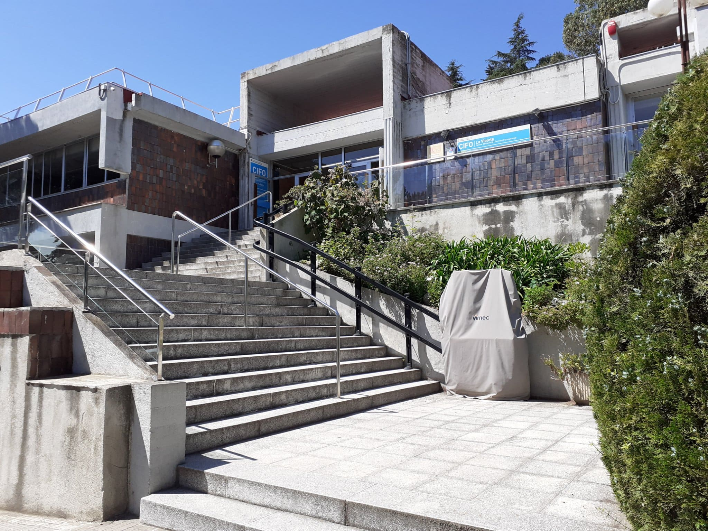
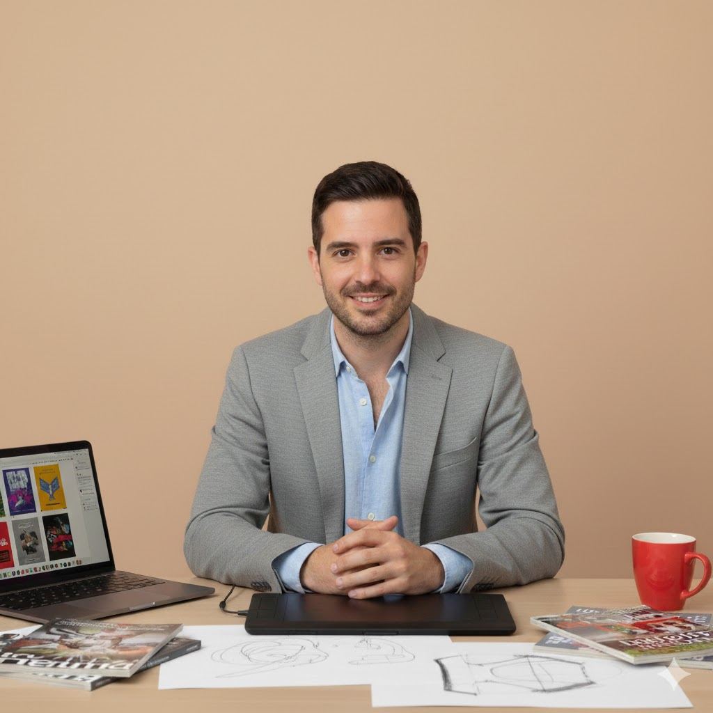

Som {Edito}Line
Una editorial independent amb ànima.
Creiem en el poder de les històries per transformar vides. Des de 2018, treballem per donar veu a autors emergents i portar literatura de qualitat als lectors de parla catalana.
La nostra història
{Edito}Line va néixer el 2018 a Barcelona amb una idea clara: crear un espai on les veus literàries emergents poguessin brillar. Fundada per un grup d'editors apassionats per la literatura catalana, ens vam proposar trencar els motlles de l'edició tradicional.
Des dels nostres inicis, hem apostat per projectes arriscats, històries diferents i autors amb alguna cosa autèntica a dir. No busquem best-sellers fàcils, sinó obres que deixin petjada. Sis anys després, hem publicat més de 80 títols i treballem amb 16 autors que confien en nosaltres per fer créixer les seves carreres literàries.
El nostre nom, {Edito}Line, reflecteix la nostra essència: editar amb criteris clars (Edito) i traçar noves línies en el panorama literari català (Line). Cada llibre que publiquem és una línia nova, un camí inexplorat, una aposta pel talent genuí.

Què ens mou?
Missió
Descobrir, impulsar i publicar talent literari emergent en català, oferint als autors l'acompanyament professional que mereixen i als lectors obres de qualitat que els facin pensar, sentir i créixer.
Visió
Ser la editorial de referència per als autors emergents de Catalunya, reconeguda per la qualitat editorial, la proximitat amb els creadors i el compromís amb la literatura catalana contemporània.
Valors
- Qualitat: Cuidem cada detall de la cadena editorial
- Valentia: Publiquem històries arriscades i diferents
- Transparència: Relació honesta amb autors i lectors
- Proximitat: Acompanyem els autors en cada pas
- Compromís: Amb la llengua i cultura catalanes
Com treballem?
De l'original a la llibreria: el nostre procés editorial pas a pas.
Recepció i lectura
Llegim amb atenció cada manuscrit que ens arriba. El nostre comitè de lectura avalua qualitat literària, originalitat i potencial comercial.
Edició i correcció
Treballem colze a colze amb l'autor per polir el text. Edició de contingut, correcció lingüística i revisió estilística per garantir l'excel·lència.
Disseny i maquetació
El nostre equip de disseny crea portades que capturen l'essència de cada obra. Maquetació acurada per a una experiència de lectura òptima.
Producció i distribució
Imprimim amb proveïdors locals sostenibles. Distribuïm a totes les llibreries de Catalunya i en format digital a les principals plataformes.
Promoció i difusió
Campanyes de màrqueting personalitzades, presència a xarxes socials, presentacions, entrevistes i ressenyes per donar visibilitat a cada títol.
Acompanyament continu
No acabem amb la publicació. Seguim al costat de l'autor, ajudant-lo a créixer i planificant futurs projectes. Som un equip a llarg termini.
L'equip darrere dels llibres
Persones apassionades per la literatura que treballen cada dia per fer realitat els somnis dels nostres autors.
Marta Colomer
Directora Editorial
Filòloga i editora amb 15 anys d'experiència. Marta defineix la línia editorial i supervisa tots els projectes de principi a fi.
Jordi Solà
Editor de Ficció
Escriptor i editor especialitzat en narrativa. Jordi treballa colze a colze amb els autors per donar forma a les seves històries.
Núria Ferrer
Editora de No-ficció
Periodista i divulgadora cultural. Núria selecciona i edita assaigs i obres de divulgació amb rigor i passió.

David Roca
Dissenyador Gràfic
Dissenyador especialitzat en disseny editorial. David crea les portades que fan que els llibres cridin des de les prestatgeries.
Laura Miró
Responsable de Màrqueting
Experta en comunicació literària. Laura dissenya estratègies per connectar els nostres llibres amb els lectors adequats.
Carles Bosch
Corrector Lingüístic
Lingüista amb una mirada atenta al detall. Carles garanteix que cada text sigui impecable abans d'arribar als lectors.
{Edito}Line en xifres
Anys de trajectòria
Títols publicats
Autors al catàleg
Llibreries distribuïdores
Premis literaris guanyats
Lectors cada any
Vols publicar amb nosaltres?
Estem sempre buscant noves veus i projectes literaris amb potencial. Si tens un manuscrit acabat i creus que encaixa amb la nostra línia editorial, ens encantarà llegir-te.
Envia'ns el teu manuscrit